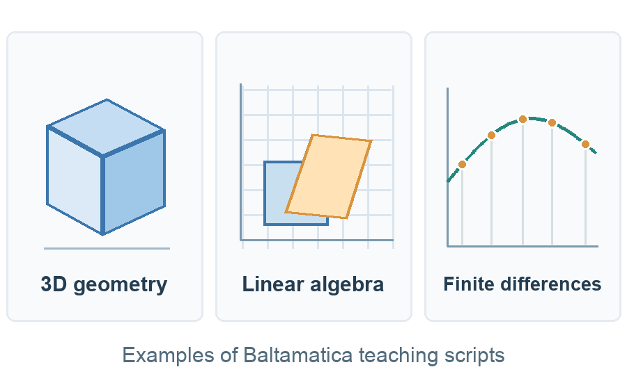
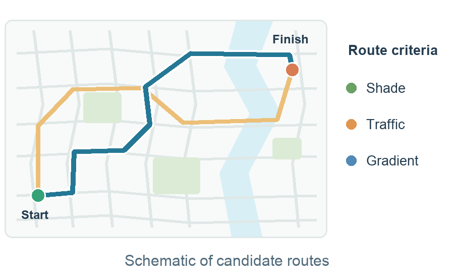
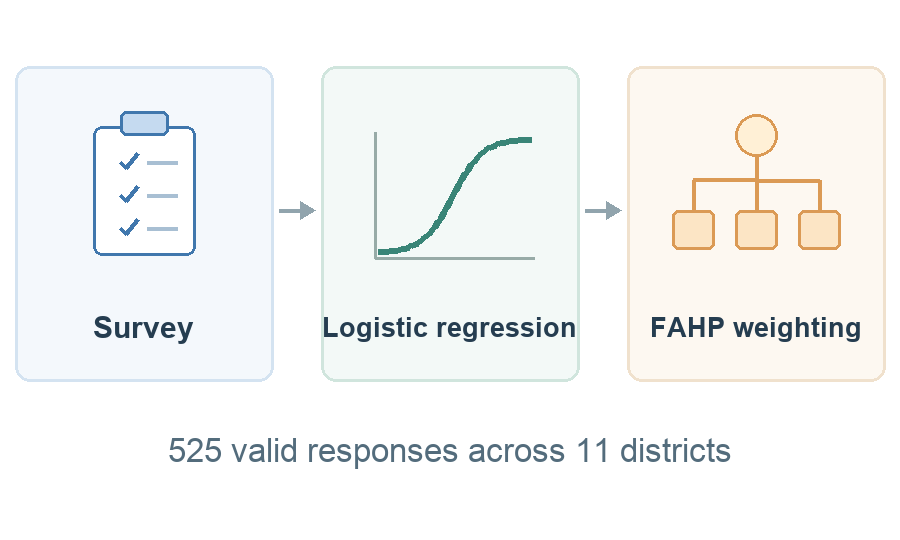

基于 Baltamatica 的大学数学实验教学
搭建可复用的实验教学体系，编写 50 余份脚本，用于立体几何、线性代数和有限差分方法的可视化教学。项目在三次课堂教学中试用，覆盖约 30 名学生。
我于 进入南京信息工程大学数学与统计学院学习数学与应用数学，预计于 本科毕业。
我已获香港中文大学理学院数学理学硕士（MSc in Mathematics）项目录取，预计于 入学。

我的项目涉及数学建模、统计分析和科学计算。

搭建可复用的实验教学体系，编写 50 余份脚本，用于立体几何、线性代数和有限差分方法的可视化教学。项目在三次课堂教学中试用，覆盖约 30 名学生。

整合 11 座城市的数据和西安地理空间数据，使用 TOPSIS 对办赛月份排序，规划了一条约 42 公里的路线，并用 NSGA-II 综合优化树荫覆盖、交通影响和路线坡度。

分析南京市 11 个区的 525 份有效问卷。通过二元逻辑回归识别与接种意愿相关的 5 项因素，并用模糊层次分析法为 25 项指标赋权。
东京大学暑期学术项目，2024 年 7–8 月。通过讲座和实地参访了解日本的环境治理、防灾、老龄化社会和教育体系，并参访物理实验室，了解核聚变与实验物理研究。
南京信息工程大学数学与统计学院学生会文艺部门，2023 年 9 月至 2024 年 9 月。参与组织数学文化节等 10 余场校园活动，并在同伴辅导项目中提供学业辅导与经验分享。